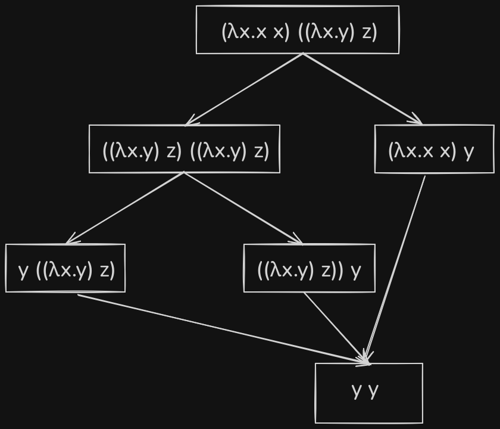
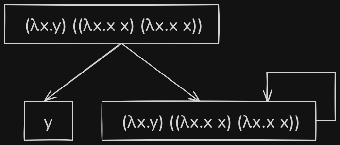

Hey there! It's been a while since I've written a technical blog post. Last month, I came across FP Launchpad, a research center at IIT Madras that aims to build long-term research and educational capacity in field of functional programming in India. After digging a bit deeper, I came across their kickoff event talks and after watching a couple of them and going through Prof. KC Sivaramakrishnan's blog posts, I kinda got hooked onto functional programming in a way.
I was always kinda curious about functional programming. Me and a couple of my friends used to participate in Advent of Code (AoC), and we used to try picking different languages every year. This was one of the ways I learned new programming languages. I remember very well when one of my friends was using Haskell for one of the AoCs, and when I tried to understand his code, and it just felt complicated. There were a lot of words - monads, monoid, thunks, bifunctor, etc. This was one of the main reasons why I never tried out functional programming earlier due to word soup and jargon-heavy terminology.
I took some time out last weekend to try out Not really sure if I can call building an untyped lambda calculus interpreter as "trying" out FP functional programming, but with the lowest number of abstractions. So I decided to build a small untyped lambda calculus interpreter in Go. This blog post would act like an introduction to lambda calculus rather than a "How to build an untyped lambda calculus interpreter" hand-held guide. If you're curious about the untyped lambda calculus interpreter which I made, you can check it out over here.
Firstly, don't get confused by the word "calculus". It is not related to integrals or derivatives in any way. The word calculus just means a formal system of calculation. The part of calculus that deals with integrals and derivatives was mainly developed by Newton and Leibniz, and it became so dominant that people nowadays directly associate calculus with it.
In computer science, there are two major mathematical models of computation - turing machines and lambda calculus. Both are very primitive machines capable of executing any computer algorithm.
In the case of turing machines, it involves an infinite memory tape which is divided into cells that hold a symbol and a pointer that points to one of those cells. At each step, the pointer reads the symbol from the cell, performs some executation based on it like updating the symbol at the current cell, moving left/right, or halting the machine.
In case of lambda calculus, all you have are functions. Yep, just using functions and function calls, it is possible to build a universal machine.
Attention Functions are all you need! Specifically higher order functions
Syntactically, it consists of three things: variables, abstractions (functions), and applications (function calls).
The way you define a function in lambda calculus is as follows:
\[\lambda x.M\]where \(\lambda\) is used to indicate the start of a function which is then followed by a variable (in this case \(x\)) and . (dot) is used as a divider between the function argument and body
If you notice the function doesn't really have any "name" to it. It's similar to anonymous functions in modern day programming languages. The keyword lambda in Python refers to this exactly.
This is how you execute the functions:
\[(\lambda x.M) \; y = M[x := y]\]The above operation would replace all the mentions of \(x\) in \(M\) with \(y\). This isn't fully true, and I'm gonna cover how the actual function evaluation takes place in depth in substitutions section.
Even though both turing machines and lambda calculus refer to the same thing, i.e., a universal machine, both of them are adopted by different communities within the field of computer science research. The design of turing machines is much more low-level/bare bones and hence it is used by researchers working on computer algorithms, where as lambda calculus is used by programming language researchers. Lambda calculus focuses more on the structure of your program i.e., how do you organize your program.
Lambda calculus is the most minimal turing complete language as it just consists three different production states. Here is the entire BNF grammar of lambda calculus:
\[ \begin{align} e ::= \; & x & &(\text{Variable}) \\ \mid \; & \lambda x . e & &(\text{Abstraction}) \\ \mid \; & e \; e & &(\text{Application}) \end{align} \]Semantically, it consists of majorly two things - \(\alpha\)-conversion and \(\beta\)-reduction. Before jumping into them, I would live to go over a couple of other topics as they are utilized to formally define the aforementioned semantic rules.
In lambda calculus, all variables are local to its definitions. In the expression \(\lambda x.x\), \(x\) is said to be "bound" as its occurrence in the function body is preceded by \(\lambda x\). In the expression \(\lambda x.xy\), \(y\) is said to be "free".
Here is another interesting example:
\[(\lambda x.x) (\lambda y.yx)\]Over here the first occurance of \(x\) is bound whereas the other occurance of \(x\) is free. The reason behind is the other occurance of \(x\) is local to the function where \(y\) is the binder.
Mathematically, free variables for a lambda term \(t\) is denoted as \(FV(t)\), where:
Substitution is a mechanism via free occurrences of a variable is replaced with another lambda term. It is generally represented as \(M[x := N]\) which means "replace all the free occurrences of \(x\) in \(M\) with another lambda term \(N\)". The point that replacing of variables via substitution is only done for free variables is a very important point, because if substitution is applied on bounded variables then the meaning of the lambda function can be completely changed.
If \(x := y\) substitution rule is applied on \(\lambda x.x\) (identity function):
\[ (\lambda x.x)[x := y] = \lambda x.y \]If you see the identity function got changed into a constant function i.e. the lambda function's meaning has been completely changed.
Apart from above issue, there could be another problem which might arise during substitution which is often referred as "variable capture". Consider the following example
If \(y := x\) substitution rule is applied on \(\lambda x.y\):
\[ (\lambda x.y)[y := x] = \lambda x.x \]In the above reduction, we replaced all the free occurrences of variable \(y\) in the lambda function with \(x\) but still it changed the meaning of the function. The reason behind this is that the binder \(x\) and the \(x\) with which we have to replace both of them need to be treated differently. Over here, the free variable \(x\) gets captured by the binder \(x\).
One way to resolve this issue is via using a technique called \(\alpha\)-renaming, where the bound variables of a lambda function are renamed in a consistent manner such that the meaning is quite preserved i.e. \(\lambda x.x\), \(\lambda y.y\) and \(\lambda z.z\) all refer to the exact same function even though the binders have different names.
So considering a bit more generalized version of the above example: \((\lambda x.y)[y := N]\). Over here, first it needs to be checked whether \(x\) belongs to the set of free variables of \(N\). If yes, then \(\alpha\)-rename must be done. The binder \(x\) needs to be renamed into a different binder \(z\) such that \(z \notin FV(N)\).
\[ (\lambda x.y)[y := x] = (\lambda z.y)[y := x] = \lambda z.x \]Mathematically, substitution can be defined as follows:
It might be a bit difficult to grasp the core intuition directly from the above mathematical expressions. Here is a breakdown of each case:
In the previous section, I have covered a bit about \(\alpha\)-renaming. Within this section, we'll try to properly get an intution of what \(\alpha\)-conversion is. It is one of the two major semantic rules within lambda calculus.
\(\alpha\)-conversion is a mechanism to rename the bound variables of a lambda function consistently such that its meaning is preserved i.e. \(\lambda x.x\), \(\lambda y.y\) and \(\lambda z.z\) all refer to the same function even though their binder variable have different names. Two lambda terms are said to be \(\alpha\)-equivalent if one can be transformed into the other via some finite series of \(\alpha\)-conversions.
\(\lambda x.M\) and \(\lambda y.M[x := y]\) are said to be \(\alpha\)-equivalent, if \(y \notin FV(M)\). \(\alpha\)-equivalence between two lambda terms is commonly represented as \(\lambda x.M \equiv_{\alpha} \lambda y.M[x := y]\).
\(\beta\)-reduction is all about how to evaluate the applications. As lambda calculus, just consists of variables, functions and function calls, the only way a program can be built is via executing the functions i.e. layers of applications. An application is generally represented as \((\lambda x.M) N\) and an unapplied application is often referred as "redex". The way \((\lambda x.M) N\) is evaluated is using substitutions:
\[ (\lambda x.M) N = M[x := N] \]While applying \(\beta\)-reduction to a lambda function, one would come across different forms of a lambda term, and all of them mathematically have the same meaning. \((\lambda x.(\lambda y.y) x) z\) and \(z\) both are mathematically equivalent to one another, but the former is an intermediate form (i.e., it can be reduced further down), whereas the other is in its most simplified form and it can't be reduced down further. A lambda term which can't further reduced down is said to be in "normal form". It is important to note that not all terms have normal form. For example \((\lambda x.x \; x) (\lambda x.x \; x)\) can't be reduced down to be a normal form as on reduction you keep getting itself, it is equivalent to calling a function within itself.
Let's take an example lambda expression and try to evaluate it - \((\lambda x.x \; x) ((\lambda x.y) z)\)

The above reduction graph shows all the possible ways to reduce the example lambda expression down to its normal form. There are different styles of evaluation used. In the right branch of the reduction graph, the inner redex is first evaluated as compared to evaluating the outer redex in the left branch. Over here, it didn't matter which path was chosen as all of them lead to the same answer but there are cases where depend on evaluation method, the result changes.
Consider another example lambda expression - \((\lambda x.y) ((\lambda x.x x)(\lambda x.x x))\)

Over here if the outer redex was evaluated first then \(y\) would be the output as there are no free occurrences of \(x\) in \(y\) for substitution to occur. But if the inner redex was chosen to be evaluated first then it gets stuck in this recursive loop.